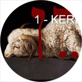
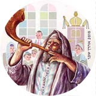
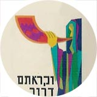
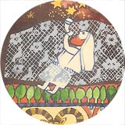
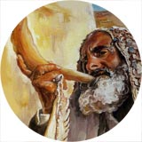
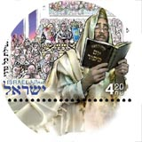

Videos on the Shofar (Rosh Hashanah)
According to Jewish tradition, the shofar has its origin in the testing of Abraham told in the Torah. This story is called the AKEDAH, which means "binding" (in Christian tradition it is more often called "the sacrifice of Isaac").
A selection of videos on the shofar

This hour-long film by Ephraim Kalish looks at the different names of the shofar, each of which carries a perfect action within it. Behind each one lies a mystery and a very deep revelation.
Sounds of the Shofar. Awe and Prophecy
Sounds of the Shofar. Shevarim: A Broken Heart
Sounds of the Shofar. Tekiah: Piercing to the Depths

The Sacrifice of Isaac. The Voice of the Shofar (Akedah)
According to Jewish tradition, the shofar has its origin in the testing of Abraham told in the Torah. This story, read in the synagogues on Rosh Hashanah, is called the AKEDAH. The shofar, which the Most High commanded us to blow throughout our generations, traces its history back to the horn of the ram that was offered as a sacrifice. This clip is an excerpt from the full-length film "The Voice of the Shofar".
An excerpt from the soundtrack of the festive gathering for Rosh Hashanah (the Feast of Trumpets), messianic synagogue "Returned to Zion", 2009. An ancient Jewish prayer from Ps 63:1–2.
Prayer and shofar: Ephraim Kalish. Synthesizer: Daniel Kruglov.

The Shofar. Isa 40:3
"The voice of him that crieth in the wilderness, Prepare ye the way of the LORD, make straight in the desert a highway for our God." This call is relevant to this day. Today, too, the shofar calls out to each of us.

Hear, O Israel!
HEAR, O ISRAEL! is the Creator's call to His people. Again and again in the Bible God stresses the need to LISTEN, to be attentive to every word that comes out of His mouth.
This clip is an excerpt from the full-length film "The Voice of the Shofar".

The Feast of the Memorial of the Sound of the Shofar
The voice of the shofar sounds in all the cities and synagogues of the world where Jews are scattered. The Feast of Blowing the Shofar (also called the Feast of Trumpets) is the time to blow the shofar.

Shofar + prayer in Hebrew + musicians' improvisations
Prayer in Hebrew and improvised shofar blowing together with the musicians of the "Cornerstone" congregation in Kazan.

The Shofar: A Witness of History
An interesting documentary on the history and meaning of the shofar.

The Shofar: Yovel (Jubilee)
Jewish prayer, shofar blowing and musical improvisation: part of a Rosh Hashanah celebration among artist friends.
Concerto for Shofar, Trombone and Orchestra by Meir Warshauer
Playlists (lists of videos on the shofar)
— SHOFAR | The Worship of Israel
— SHOFAR | Fulfilling the Commandment to Blow
— SHOFAR | The Symbolism of the Blowing
— SHOFAR
 May a Woman Blow the Shofar?
May a Woman Blow the Shofar? Purim-shpil. Exposing Evil…
Purim-shpil. Exposing Evil…